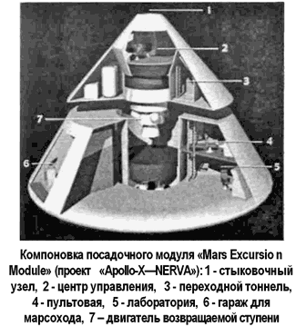
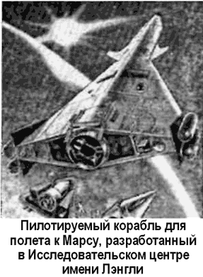
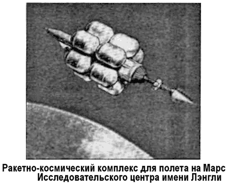
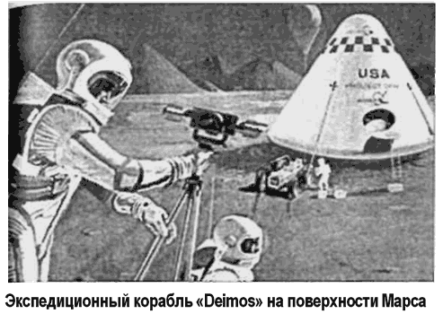

Американская марсианская программа
В сентябре 1969 года руководство НАСА подготовило доклад для президента и его администрации, озаглавленный «Космическая программа после Аполлона: директивы на будущее» («The Post-Apollo Space Program: Directions for the Future»).
В докладе отмечалось, что программа «Аполлон» безусловно является высшим достижением в космической области на сегодняшний день, но при этом она — лишь этап долговременного процесса по изучению и освоению человеком космического пространства. Авторы доклада указывали, что в этой связи особое беспокойство вызывает намерение администрации сократить ассигнования перспективных программ, в том числе — проект экспедиции на Марс. Руководители НАСА заверяли, что, используя накопленный в ходе освоения Луны опыт, Национальное управление по аэронавтике и космонавтике вполне способно осуществить такую экспедицию в течение 15 лет. Для этого предлагалось принять полет на Марс в качестве основной цели для существующей космической программы.
Сама подготовка к такому полету виделась авторам доклада разделенной на три фазы. Первая фаза — переориентация работы всех бюро, институтов, фирм и заводов, занятых в программе «Аполлон», на решение задач марсианского проекта. Вторая фаза — создание долговременной орбитальной станции и постоянной базы на Луне для обеспечения строительства межпланетного корабля и подготовки экипажей.
Третья фаза — собственно серия пилотируемых полетов к Марсу и на Марс с последующим возвращением на Землю.
Выбор конкретного графика реализации этой программы оставлялся на усмотрение президента. Он мог выбирать из двух вариантов: параллельное строительство орбитальной станции и межпланетного корабля (приблизительная стоимость — 6 миллиардов долларов) или последовательное строительство: сначала станции, а потом — корабля (стоимость — от 4 до 5 миллиардов долларов). В случае, если выбор будет сделан в пользу первого варианта, специалисты НАСА обещали построить межпланетный корабль к 1974 году, с тем чтобы запустить его к Марсу уже в 1981 году. Второй вариант гарантировал запуск межпланетного корабля только к 1986 году.
Любопытно, что в докладе не исключалась возможность вовлечения в программу советских космонавтов и специалистов с целью расширения научного сотрудничества на Земле и в космосе. То есть уже в 1969 году эксперты НАСА говорили о международной программе покорения Марса. Советские ученые заговорят об этом значительно позже.
Что же представляла собой американская программа экспедиции на Марс с инженерно-технической точки зрения?
В разные годы самые различные организации США предлагали свои проекты корабля для полета к Марсу. Разумеется, выбор оставался за руководством НАСА, и именно оно выделяло средства на исследования, так или иначе связанные с этой темой.
Например, с 1963 по 1969 год НАСА финансировало проект «НЕРВА» («NERVA»), направленный на создание ядерного ракетного двигателя для полета к Луне и планетам Солнечной системы. Подробнее я расскажу об этом проекте в главе 19, а сейчас остановимся только на тех деталях, которые касаются непосредственно космического корабля.

Существовало два более или менее проработанных варианта межпланетного корабля для полета на Марс с использованием ядерного ракетного двигателя типа «НЕРВА». В одном из них предполагалось использовать пять типовых ядерных ступеней: связку из трех таких ступеней — в качестве первой ступени трехступенчатой ракеты-носителя, и по одной такой же ступени — для второй и третьей ступеней.
Сборка подобной ядерной ракеты должна была производиться на околоземной орбите с использованием ракет-носителей «Сатурн-5». Сам полет к Марсу согласно этому проекту мог состояться уже в 1985 году.
Другой проект космического корабля на базе ядерных ступеней «НЕРВА» представлял собой трехступенчатую ракету, которая в отличие от первой не нуждалась в повторном запуске какого-либо из установленных на ней ядерных ракетных двигателей: после того как двигатели отрабатывали свое, их отделяли от корабля.

Схема межпланетной экспедиции с использованием этого корабля выглядела бы следующим образом.
Старт — 12 ноября 1981 года; выход на 24-часовую эллиптическую орбиту вокруг Марса — 9 августа 1982 года; изучение Марса с высадкой экспедиции на его поверхность; отбытие — 28 октября 1982 года; полет к Венере с ее проходом — 28 февраля 1983 года; выход на околоземную орбиту — 14 августа 1983 года; стыковка с кораблем «Спейс Шаттл»; возвращение экипажа на Землю через 640 дней после отправления.
Предполагалось, что большинство систем и оборудования корабля для полетов к Марсу будет аналогичным системам и оборудованию лунного корабля «Аполлон» (более того, этот проект некоторое время фигурировал под обозначением «Аполлон-Икс»). При этом, однако, обитаемый модуль должен иметь гораздо более высокое аэродинамическое качество и более совершенную систему теплозащиты, чем возвращаемая капсула «Аполлона», так как при сходе с космической траектории к Земле скорость будет порядка 13–18 км/с.
По представлениям конструкторов НАСА, в полет к Марсу должны были отправиться два одинаковых космических корабля. Каждый корабль имеет отсек с оборудованием, командный отсек и отсек посадки на Марс. В случае появления неисправностей в одном из кораблей на любой стадии полета его команда может покинуть аварийный корабль в своем командном отсеке и пристыковаться ко второму кораблю.
Следовательно, каждый корабль должен вмещать удвоенный экипаж (всего шесть человек). Отсеки с оборудованием и командный будут работать в переменном поле тяготения с перегрузкой от 0 до 0,6 g. Жилые помещения находятся в отсеке оборудования. Командный отсек используется при выходе на орбиту, во время входа в атмосферу и посадки, а также при аварийном покидании корабля. Посадочный отсек будет оставлен на околомарсианской орбите после того, как экипаж перейдет в отсек оборудования. Последний будет сброшен перед входом в атмосферу Земли.
Согласно исследованиям, проведенным в Исследовательском центре имени Лэнгли, весьма эффективным средством уменьшения начального веса системы для полета по маршруту Земля-Марс-Земля является использование аэродинамического торможения в атмосферах Марса и Земли.
С учетом этого в Центре разрабатывался крылатый космический корабль с высоким аэродинамическим качеством.
Стартовый вес ракетно-космической системы Центра имени Лэнгли составлял 400 тонн. Система была снабжена ядерной ракетной силовой установкой весом 59 тонн и собиралась на околоземной орбите с помощью четырех ракетносителей «Сатурн-5». Планировалось, что первая ракета доставит на орбиту ядерную силовую установку и полезную нагрузку в виде крылатого космического корабля, а три остальных — 12 баков с топливом.

В 1969 году проект «НЕРВА» был закрыт. Его развитие требовало значительных капиталовложений, а денег у НАСА едва хватало на обеспечение лунных экспедиций.
В это время американский ученый и конструктор Филип Боно выступил с детально проработанным альтернативным проектом марсианской экспедиции, получившим название «Деймос» («Project Deimos»).
В качестве ракетно-космического комплекса, которому предстояло доставить экспедиционный корабль к Марсу, Боно предлагал гигантский ускоритель на химическом топливе «Ромбус» («Rombus»), заправляемый на околоземной орбите высотой 320 километров. Стартовая масса комплекса — 3965 тонн. На участке разгона корабль должен будет сбросить четыре опустевших топливных бака. Через 200 дней после старта, выйдя на околомарсианскую орбиту высотой 555 километров, корабль избавится еще от двух баков; при этом масса его составит 985 тонн. Затем произойдет отделение 25-тонного экспедиционного корабля, на котором экипаж из трех астронавтов совершит высадку на Марс. Этот корабль имел очень незначительный обитаемый объем и мог обеспечить лишь 20-дневное пребывание астронавтов на поверхности красной планеты. В перспективе можно было бы продлить время пребывания до года, загодя доставив на Марс необходимые запасы продовольствия, кислорода и воды.
По окончании исследовательской программы экипаж стартует в 11-тонном возвращаемом модуле экспедиционного корабля и, состыковавшись с разгонным блоком, через 280 дней после выхода на орбиту Марса покидает пределы красной планеты. Обратная дорога займет еще 330 дней.
Полная масса комплекса после возвращения к Земле составит всего 340 тонн.
Межпланетный корабль рассчитывался на шестерых астронавтов. Для выполнения успешного полета к Марсу и обратно им потребовалось бы 6500 килограммов продовольствия, кислорода и воды. Энергоснабжение корабля обеспечивалось двумя ядерными реакторами «СНАП-8» («SNAP-8»).

Согласно выкладкам Боно, если бы корабль «Деймос» удалось запустить к Марсу 9 мая 1986 года, то уже 25 ноября 1986 года он бы вышел на околомарсианскую орбиту, а 16 августа 1988 года экипаж вернулся бы на Землю.
Впрочем, предложение Филиппа Боно не заинтересовало руководство НАСА, и проект марсианской экспедиции «Деймос» остался лишь еще одной теоретической разработкой среди сотен других.
В конце 1970-х годов, когда и самому распоследнему американцу стало ясно, что пилотируемая экспедиция на Марс — дело не ближайшего, а весьма отдаленного будущего, в НАСА решили более серьезно подойти к проблеме длительного межпланетного полета. Для изучения вопроса о влиянии такого полета на организм астронавтов было предложено построить орбитальную станцию, которая станет прототипом обитаемого модуля межпланетного корабля — «ПММ» («РММ», «Planetary Mission Module»). Орбитальная станция-прототип имела форму колеса с габаритами: максимальный диаметр — 16,5 метра, обитаемый объем — 930 м3 полная масса — 100 тонн. Экипаж — 6 человек. Расчетный срок эксплуатации — 3 года. Потребляемая мощность — 25 кВт, энергоснабжение — от ядерного реактора.
В ходе проектирования и эксплуатации орбитальной станции «ПММ» предполагалось ответить на целый ряд вопросов связанных с длительной экспедицией к Марсу. Прежде всего следовало обеспечить нормальную жизнедеятельность экипажа, то есть определить необходимое количество запасов продовольствия, кислорода, воды и запасных частей к оборудованию с учетом невозможности их восполнения, рассчитать теплозащиту на случай опасного приближения к Солнцу и защиту от космического излучения. С другой стороны, перед разработчиками встала масса технических проблем достаточно ли мощности реактора, нужно ли раскручивать станцию для создания «искусственной гравитации» или можно обойтись без этого, какие системы требуют дублирования, а какие нет… И так далее, и тому подобное.
Проект станции-прототипа «ПММ» был вполне реален, но и его не удалось довести до завершения. Все ресурсы НАСА оказались задействованы в программе создания кораблей многоразового использования.